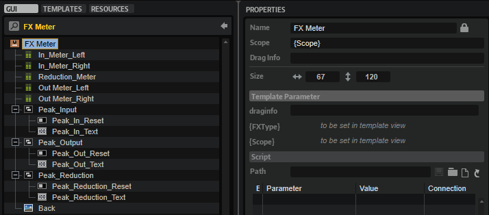

/ HALion Developer Resource / HALion Macro Page / Templates /
FX Meter
On this page:

Description
The FX Meter template allows you to display input, output, and reduction meters for effects like Compressor, Expander, Limiter, etc. It also contains text controls for peak values and switches for resetting them. The controls are connected by corresponding UI variables. To ensure the operation of the controls, the preconfigured properties must not be modified. The look and the size of the controls can be modified freely including their ressources. Controls that are not needed for your instrument can be omitted on your macro page. For example, if an effect does not need a reduction meter, you can remove it and save this configuration in another template.
To explore the functionality and connections:
- Load the Init Basic Controls.vstpreset from the Basic Controls library.
- Open the Macro Page Designer, go to the GUI Tree and navigate to "Pages > Deco and Meter Page".
- Select "FX Meter" and click Edit Element
 to examine the template.
to examine the template.
Template Properties
| Poperty | Description |
|---|---|
| Name | The name of the element. This name will be displayed in the GUI Tree. |
| Position/Size | Position X, Position Y, Width, Height: Position and size of the element in pixels. Position X/Y defines the position of the upper left corner. |
| Attach | Defines how an element behaves when its parent element is resized. You can set the following parameters:
|
| Tooltip | Text that appears as a tooltip when the mouse hovers over the element. |
| Template | Determines the template to be referenced. |
Template Parameters
| Parameters | Description |
|---|---|
| FXType | Specifies the effect type the controls should connect to. See Effect Types for a list of the supported types. |
| Scope | Determines to which effect the controls should connect. For example, @bus:0/@0:Tube Compressor connects the controls to the first effect named Tube Compressor in the first bus. |
Effect Types
| Module | FX Type | Comment |
|---|---|---|
| Compressor | Compressor | - |
| Expander | Expander | - |
| Limter | Limiter | - |
| Maximizer | Optimiser | - |
| Brickwall Limiter | BrickwallLimiter | - |
| Tube Compressor | TubeCompressor | - |
| Vintage Compressor | VintageCompressor | - |
| Gate | Gate | No reduction meter. |
| Graph EQ | GraphicEQ10 | Only output meter. |
| Morph Filter | MorphFilter | Only output meter. |
| DJ EQ | HiFiEq | Only output meter. |
❕ The Studio EQ effect requires the specialized template Studio EQ Meter.
Components inside the Template

Controls and Subtemplates
| Item | Description |
|---|---|
| In_Meter_Left | A Meter control connected with the left input channel of the effect. Its Value must be set to @VUInL . |
| In_Meter_Right | A Meter control connected with the right input channel of the effect. Its Value must be set to @VUInR . |
| Reduction_Meter | A Meter control connected with the gain reduction output of the effect. Its Value must be set to @GainReduction . |
| Out_Meter_Left | A Meter control connected with the left output channel of the effect. Its Value must be set to @VUOutL . |
| Out_Meter_Right | A Meter control connected with the right output channel of the effect. Its Value must be set to @VUOutR . |
| Peak_Input | A Group with two elements:
|
| Peak_Output | A Group with two elements:
|
| Peak_Reduction | A Group with two elements:
|
| Back | An Image control that provides the background bitmap for the meters. |